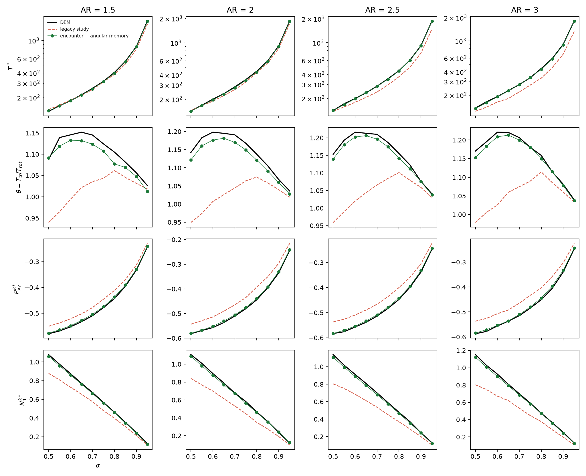
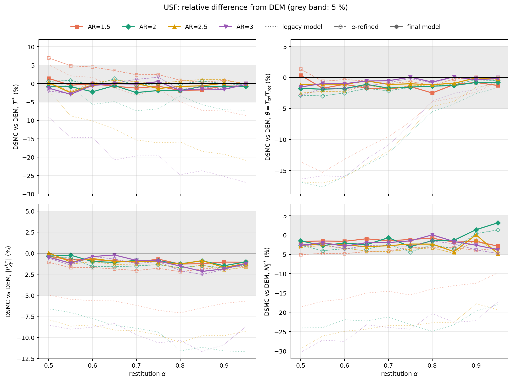
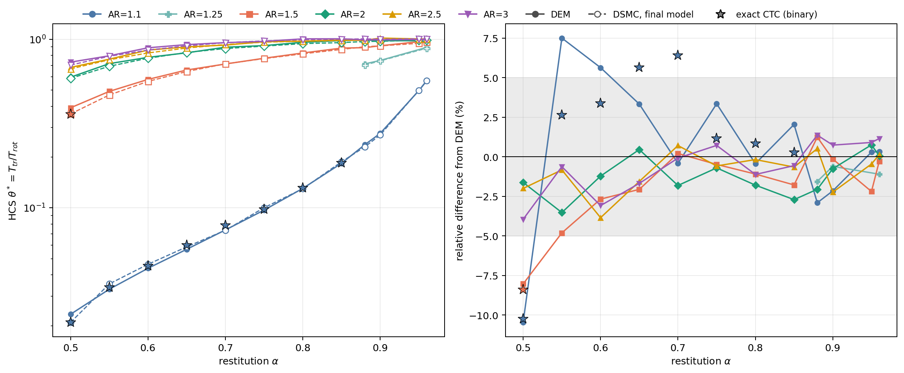

<title>DSMC Event-Unit Repair</title>
<link rel="preconnect" href="https://fonts.googleapis.com">
<link rel="stylesheet" href="https://fonts.googleapis.com/css2?family=Source+Serif+4:ital,opsz,wght@0,8..60,400;0,8..60,600;1,8..60,400&family=IBM+Plex+Sans:wght@500;600&family=IBM+Plex+Mono:wght@400&display=swap">
<style>
/* Layout: a single monograph column (~68ch) with numbered sections, full-width tables and figure plates. */
:root {
  --paper: #fafaf8;
  --ink: #1c2227;
  --muted: #5a646d;
  --rule: #d8dcdf;
  --accent: #245a86;
  --plate: #ffffff;
  --legacy: #a63d3a;
  --fixed: #2c7550;
  --shade: #eef1f3;
  --serif: "Source Serif 4", Georgia, "Times New Roman", serif;
  --sans: "IBM Plex Sans", "Helvetica Neue", Arial, sans-serif;
  --mono: "IBM Plex Mono", ui-monospace, Menlo, Consolas, monospace;
}
@media (prefers-color-scheme: dark) {
  :root:not([data-theme="light"]) {
    --paper: #131619; --ink: #e2e5e8; --muted: #9ba4ac; --rule: #2d333a;
    --accent: #86b6e0; --plate: #ffffff; --legacy: #e38a86; --fixed: #7fcaa2; --shade: #1c2126;
    color-scheme: dark;
  }
}
:root[data-theme="dark"] {
  --paper: #131619; --ink: #e2e5e8; --muted: #9ba4ac; --rule: #2d333a;
  --accent: #86b6e0; --plate: #ffffff; --legacy: #e38a86; --fixed: #7fcaa2; --shade: #1c2126;
  color-scheme: dark;
}
body { background: var(--paper); color: var(--ink); font-family: var(--serif); font-size: 18px; line-height: 1.62; }
.page { max-width: 46rem; margin: 0 auto; padding-inline: 20px; padding-block: 3rem 5rem; }
header.chapter { border-bottom: 1px solid var(--rule); padding-bottom: 1.6rem; margin-bottom: 2rem; }
.eyebrow { font-family: var(--sans); font-size: 0.78rem; letter-spacing: 0.08em; text-transform: uppercase; color: var(--accent); font-weight: 600; }
h1 { font-family: var(--serif); font-weight: 600; font-size: 2.2rem; line-height: 1.15; margin: 0.4rem 0 0.8rem; text-wrap: balance; }
.lede { font-size: 1.08rem; color: var(--ink); margin: 0; }
.byline { font-family: var(--sans); font-size: 0.82rem; color: var(--muted); margin-top: 1rem; }
h2 { font-family: var(--sans); font-weight: 600; font-size: 1.28rem; margin: 3rem 0 0.6rem; text-wrap: balance; }
h2 .num { color: var(--accent); margin-right: 0.5rem; font-variant-numeric: tabular-nums; }
h3 { font-family: var(--sans); font-weight: 600; font-size: 1.02rem; margin: 2rem 0 0.4rem; color: var(--ink); }
p { margin: 0 0 1rem; }
.mjx-block { overflow-x: auto; overflow-y: hidden; }
mjx-container[display="true"] { margin: 1.1rem 0 !important; overflow-x: auto; overflow-y: hidden; max-width: 100%; }
.note { border-left: 3px solid var(--accent); background: var(--shade); padding: 0.8rem 1rem; margin: 1.4rem 0; font-size: 0.97rem; }
.note p:last-child { margin-bottom: 0; }
.table-wrap { overflow-x: auto; margin: 1.2rem 0 1.6rem; }
table { border-collapse: collapse; width: 100%; font-family: var(--sans); font-size: 0.86rem; font-variant-numeric: tabular-nums; }
caption { caption-side: top; text-align: left; font-family: var(--serif); font-size: 0.92rem; color: var(--muted); padding-bottom: 0.5rem; }
caption b { color: var(--ink); font-weight: 600; }
th, td { padding: 0.42rem 0.6rem; border-bottom: 1px solid var(--rule); text-align: right; white-space: nowrap; }
th:first-child, td:first-child { text-align: left; }
thead th { font-weight: 600; color: var(--muted); border-bottom: 1.5px solid var(--ink); }
td.bad { color: var(--legacy); }
td.good { color: var(--fixed); font-weight: 600; }
figure { margin: 2rem 0; }
figure img { width: 100%; background: var(--plate); border: 1px solid var(--rule); border-radius: 2px; }
figcaption { font-size: 0.9rem; color: var(--muted); margin-top: 0.6rem; }
figcaption b { color: var(--ink); }
code { font-family: var(--mono); font-size: 0.84em; background: var(--shade); padding: 0.05em 0.3em; border-radius: 2px; }
ol.steps, ul.plain { padding-left: 1.3rem; margin: 0 0 1rem; }
ol.steps li, ul.plain li { margin-bottom: 0.45rem; }
.toc { font-family: var(--sans); font-size: 0.88rem; columns: 2; column-gap: 2rem; margin: 0 0 1rem; padding-left: 1.2rem; }
.toc li { margin-bottom: 0.25rem; break-inside: avoid; }
.algo { border-top: 1.5px solid var(--ink); border-bottom: 1.5px solid var(--ink); margin: 1.4rem 0 1.8rem; padding: 0.6rem 0 0.8rem; font-size: 0.95rem; }
.algo .head { font-family: var(--sans); font-weight: 600; font-size: 0.9rem; margin-bottom: 0.5rem; }
.algo ol { margin: 0; padding-left: 1.6rem; }
.algo li { margin: 0.35rem 0; }
.algo ol ol, .algo ol ul { margin-top: 0.3rem; padding-left: 1.3rem; }
.algo .blk { font-family: var(--sans); font-weight: 600; font-size: 0.82rem; letter-spacing: 0.04em; text-transform: uppercase; color: var(--muted); margin: 0.9rem 0 0.2rem; }
.tag { font-family: var(--sans); font-size: 0.7rem; font-weight: 600; letter-spacing: 0.04em; padding: 0.05rem 0.35rem; border-radius: 2px; border: 1px solid currentColor; margin-left: 0.3rem; white-space: nowrap; }
.tag.on { color: var(--fixed); }
.tag.new { color: var(--accent); }
.tag.off { color: var(--muted); }
.tag.diag { color: var(--legacy); }
.algo .aside { font-size: 0.9rem; color: var(--muted); margin: 0.5rem 0 0.2rem; }
tr.obs td { font-weight: 600; border-bottom: 1.5px solid var(--rule); }
table.wrap td, table.wrap th { white-space: normal; }
table.wrap td { text-align: left; vertical-align: top; }
a { color: var(--accent); }
@media (max-width: 560px) {
  body { font-size: 17px; }
  h1 { font-size: 1.7rem; }
  .toc { columns: 1; }
}
</style>

<script>
window.MathJax = {
  tex: { inlineMath: [["\\(", "\\)"]], displayMath: [["\\[", "\\]"]], tags: "ams",
         macros: { gd: "\\dot\\gamma", ghat: "\\hat{\\boldsymbol g}", bg: "\\boldsymbol g",
                   E: "\\mathbb{E}", enc: "\\mathrm{enc}", BL: "\\mathrm{BL}" } },
  svg: { fontCache: "global" }
};
</script>
<script src="https://cdnjs.cloudflare.com/ajax/libs/mathjax/3.2.2/es5/tex-svg-full.min.js"></script>

<main class="page">

<header class="chapter">
  <div class="eyebrow">DSMC_V2 · inelastic spherocylinders · final model</div>
  <h1>A collision closure learned from exact dynamics, and how it was reached</h1>
  <p class="lede">The final DSMC closure for smooth inelastic spherocylinders is fitted only from exact collision dynamics (CTC) at Maxwellian nodes. Against independent DEM it reproduces uniform shear flow to within 5&nbsp;% in every one of 40 rod cases (median 0.8&nbsp;% in \(T^*\), 1.1&nbsp;% in \(\theta=T_{tr}/T_{rot}\)), and the homogeneous cooling state to within 5&nbsp;% at 59 of 63 coordinates. The four exceptions are near-spheres at strong dissipation, where the model agrees with exact binary collisions and the gap lies between binary physics and DEM. Part&nbsp;I states the model that ships; Part&nbsp;II records how each piece was found.</p>
  <div class="byline">Final state 4 October 2026 · release tag <code>closure-v2-final-v1</code> · model folder <code>models/microscopic_closure_v2_final_v1/</code> · methods text <code>reports/DSMC_CLOSURE_FORMULATION_FINAL.md</code></div>
</header>

<ol class="toc">
  <li>What sets a USF steady state</li>
  <li>One collision event is one encounter</li>
  <li>The closure: three conditional laws</li>
  <li>Nodes and the physical stencil</li>
  <li>The algorithm, every closure</li>
  <li>Validation against DEM</li>
  <li>Binary physics and what it cannot contain</li>
  <li>Cost</li>
  <li>Two scaling laws and the identical-pairs probe</li>
  <li>Why HCS could not see the event-unit error</li>
  <li>The collision cross-section \(\sigma_c\)</li>
  <li>The second-stage acceptance and \(\Xi\)</li>
  <li>The exchange gate, then and now</li>
  <li>Interpolation in \(\alpha\)</li>
  <li>The loss follows the energy split</li>
  <li>The energy-weighted exchange kernel</li>
  <li>The production measure (a diagnostic)</li>
  <li>What changed, in order</li>
</ol>

<div class="eyebrow" style="margin-top:2.4rem">Part I · the model that ships</div>

<h2><span class="num">1</span>What sets a USF steady state</h2>

<p>Consider a homogeneous gas under simple shear \(u_x=\gd\,y\), with number density \(n\), peculiar velocity \(\boldsymbol c\), kinetic stress \(P_{ij}=n\langle m c_i c_j\rangle\) and rotational energy density \(E_{\rm rot}=n\langle e_{\rm rot}\rangle\). Taking moments of the Boltzmann equation gives, with no approximation,</p>
\begin{equation}
\frac{dP_{ij}}{dt}=-\gd\,\big(\delta_{ix}P_{jy}+\delta_{jx}P_{iy}\big)+\Lambda_{ij}[f],
\qquad
\frac{dE_{\rm rot}}{dt}=\Lambda_{\rm rot}[f].
\label{eq:balance}
\end{equation}
<p>All collisional physics sits in the production functionals. For a binary event with outcome law \(K\) and cross-section \(\sigma\), momentum conservation gives \(m\boldsymbol c_1\boldsymbol c_1+m\boldsymbol c_2\boldsymbol c_2=2m\boldsymbol V\boldsymbol V+\tfrac m2\bg\bg\) with the centre-of-mass velocity \(\boldsymbol V\) unchanged, so</p>
\begin{equation}
\Lambda_{ij}[f]=\frac{n^2}{2}\int\! dx_1\,dx_2\; f(x_1)f(x_2)\;g\,\sigma(x_1,x_2)\;\Big\langle \tfrac m2\,\Delta(g_ig_j)\Big\rangle_{K}.
\label{eq:production}
\end{equation}
<p>Here \(x=(\boldsymbol c,\boldsymbol\omega,\boldsymbol u)\) is a particle's velocity, spin and axis, and \(g=|\bg|\) is the relative speed. In the steady state the left sides of \eqref{eq:balance} vanish:</p>
\begin{equation}
\Lambda_{xy}=\gd\,P_{yy},\qquad \Lambda_{xx}-\Lambda_{yy}=2\gd\,P_{xy},\qquad \Lambda_{\rm rot}=0 .
\label{eq:steady}
\end{equation}
<p>A collision model enters the USF answer only through \eqref{eq:production}, which is a product of <em>how often events happen</em> and <em>what one event does</em>. Any error in either factor maps straight into \(T^*\), \(P^*_{ij}\) and \(\theta\).</p>


<h2><span class="num">2</span>One collision event is one encounter</h2>
<p>The exact collision solver (CTC) integrates a force-free approach, the first contact, any further contacts while the rods rotate, and the final separation. That whole history is one <em>encounter</em>, with \(k\ge1\) contacts. Every law of the closure is fitted on encounters, so one DSMC event is one encounter: the clock fires at the encounter rate and each event draws one encounter outcome. The legacy model fired encounter kernels at a contact rate and removed a per-contact loss, which over-applied relaxation by \(\sigma_c/\sigma_{\enc}\) (up to 23&nbsp;% at AR 3); Part&nbsp;II, Sections 9–10, shows how that was measured.</p>
<div class="table-wrap"><table>
<caption><b>Table 1.</b> Event-unit quantities from the CTC shards at \(\theta=T_{tr}/T_{rot}=1\). \(\langle k\rangle\) is listed at \(\alpha=0.5/0.8/0.95\).</caption>
<thead><tr><th>AR</th><th>\(\sigma_c/\sigma_{\enc}\)</th><th>\(\langle k\rangle\)</th><th>\(\bar\varepsilon_{\BL}/\bar\varepsilon_{\enc}\)</th></tr></thead>
<tbody>
<tr><td>1.1</td><td>1.02</td><td>1.006 / 1.003 / 1.002</td><td>0.86 – 0.97</td></tr>
<tr><td>1.5</td><td>1.09</td><td>1.137 / 1.067 / 1.054</td><td>0.86 – 0.92</td></tr>
<tr><td>2.0</td><td>1.14</td><td>1.228 / 1.134 / 1.113</td><td>0.78 – 0.82</td></tr>
<tr><td>2.5</td><td>1.19</td><td>1.287 / 1.173 / 1.148</td><td>0.73 – 0.87</td></tr>
<tr><td>3.0</td><td>1.23</td><td>1.313 / 1.195 / 1.173</td><td>0.72 – 0.88</td></tr>
</tbody></table></div>
<p>\(\sigma_{\enc}\) is pure kinematics, because no force acts before first contact. It is identical across \(\alpha\) to four figures at every node, and depends only on \(\theta\) and AR.</p>
<p>For a colliding pair with relative velocity \(\bg\), spins \(\boldsymbol\omega_{1,2}\) and axes \(\boldsymbol u_{1,2}\), the reduced variables are</p>
\begin{equation}
E_{tr}=\tfrac m4 g^2,\qquad E_{\rm rot}=\tfrac I2\big(\omega_1^2+\omega_2^2\big),\qquad E=E_{tr}+E_{\rm rot},\qquad z=\frac{E_{tr}}{E}.
\label{eq:reduced}
\end{equation}
<p>An encounter removes the fraction \(\varepsilon\) of \(E\), leaves the share \(z'\) of the remaining energy \(E_f=(1-\varepsilon)E\) in translation, and turns \(\ghat\) through the cosine \(c=\ghat\cdot\ghat'\).</p>

<h2><span class="num">3</span>The closure: three conditional laws</h2>
<p>The closure is the conditional law of \((\varepsilon,z',c)\) given the incoming pair. The chain rule factorises it in the order an encounter draws the three outcomes,</p>
\begin{equation}
K(\varepsilon,z',c\mid z)=p(\varepsilon\mid z)\;p(z'\mid z,\varepsilon)\;p(c\mid z,z').
\label{eq:chain}
\end{equation}
<p>Each factor conditions only on variables already fixed, so there is no circularity: \(z\) belongs to the incoming pair, \(\varepsilon\) is drawn next, then \(z'\), then \(c\). The log-likelihood of a product is a sum, so the three laws are fitted independently from the same CTC encounters.</p>

<h3>3.1 Loss</h3>
<p>Per node, the CTC conditional mean of the loss is linear in the incoming share,</p>
\begin{equation}
\E[\varepsilon\mid z]=c_t\,z+c_r\,(1-z),
\label{eq:lossmean}
\end{equation}
<p>the loss rates of translational and rotational energy. A smooth sphere loses only translational energy (\(c_r=0\)); long rods lose from both modes almost equally. The draw is</p>
\begin{equation}
\varepsilon=\E[\varepsilon\mid z]\;\frac{B}{\langle B\rangle},\qquad B\sim\mathrm{Beta}(1.21,\,3.67),
\label{eq:loss}
\end{equation}
<p>so the per-encounter mean and its dependence on \(z\) come from CTC and \(B\) supplies the shape. Section 15 shows why the dependence on \(z\) is needed.</p>

<h3>3.2 Energy exchange</h3>
\begin{equation}
p(z'\mid z,\varepsilon)\propto 6z'(1-z')\,h(z)\,h(z')\exp\!\big[\lambda_3 zz'+\lambda_1 z'+\lambda_2 z'^2+\lambda_4\varepsilon z'\big],
\label{eq:exchange}
\end{equation}
<p>with \(h\) the Sinkhorn potential that makes the kernel reversible with respect to the elastic equipartition law, so equipartition is exact at \(\alpha=1\). At 25 nodes (24 near the sphere at low \(\theta\)) the memory \(\lambda_3 z\) is a cubic in \(x=\tanh[(\operatorname{logit}z-\mu)/2s]\). The parameters are the <b>energy-weighted I-projection</b></p>
\begin{equation}
\hat{\boldsymbol\lambda}=\arg\max_{\boldsymbol\lambda}\sum_i E_{f,i}\log p(z'_i\mid z_i,\varepsilon_i;\boldsymbol\lambda),
\label{eq:ewfit}
\end{equation}
<p>whose stationarity conditions \(\sum_iE_{f,i}[T(z'_i)-\E_p(T\mid z_i,\varepsilon_i)]=0\) contain \(\langle E_fz'\rangle\) itself. Since \(\Delta E_{tr}=E_fz'-Ez\), every node reproduces the energy each mode gains or loses, at any \(\theta\) (Section 16).</p>

<h3>3.3 Scattering angle</h3>
\begin{equation}
p(c\mid z,z')\propto\exp\!\big[(\eta_1+\xi z'+\rho_1 z)\,c+(\eta_2+\zeta z'+\rho_2 z)\,P_2(c)\big],
\label{eq:angular}
\end{equation}
<p>with the azimuth uniform about \(\ghat\), fitted as a MAP I-projection with weight \(E_f\). The identity for \(T=P_2(c)\) and covariate \(z'\) is the traceless stress production of one encounter,</p>
\begin{equation}
\big\langle\Delta(g_ig_j)\big\rangle^{\rm TL}=\Big(\tfrac4m\,\E[E_f z'P_2(c)\mid x]-|\bg|^2\Big)\Big(\hat g_i\hat g_j-\tfrac13\delta_{ij}\Big),
\label{eq:tl}
\end{equation}
<p>and the \(z\) terms carry it to incoming states unlike the node's. The outgoing relative velocity is \(\bg'=2\sqrt{z'E_f/m}\;\ghat'\).</p>

<h3>3.4 Clock, selection and spins</h3>
<p>The clock is \(\sigma_c(\theta,\mathrm{AR})=\bar A_\perp(\mathrm{AR})\,D(\theta,\mathrm{AR})\), the exact isotropic mean projected excluded area times a measured dynamic factor (Section 11). A candidate pair is kept with probability \(A_\perp(\boldsymbol u_1,\boldsymbol u_2,\ghat)\,g(\Xi)/(A_{\sup}g_{\max})\) (Section 12). The outgoing rotational energy \((1-z')E_f\) is split with a uniform fraction, and each spin gets a uniform direction perpendicular to its axis. At \(\alpha=1\) an exact elastic block replaces the encounter (Section 13); AR = 1 uses the exact smooth-sphere collision.</p>

<h2><span class="num">4</span>Nodes and the physical stencil</h2>
<p>Every law is fitted at Maxwellian nodes \(k=(\alpha_k,\theta_k,\mathrm{AR}_k)\), each from about 200,000 CTC encounters. No DEM data enters any fit.</p>
<div class="table-wrap"><table>
<caption><b>Table 2.</b> The node grid, 627 nodes.</caption>
<thead><tr><th>axis</th><th>values</th></tr></thead>
<tbody>
<tr><td>\(\alpha\)</td><td style="text-align:left">0.50, 0.55, …, 0.95, 1</td></tr>
<tr><td>\(\theta\), AR ≤ 1.35</td><td style="text-align:left">0.0125, 0.025, 0.05, 0.1, 0.15, 0.2, 0.35, 0.5, 0.7, 1, 2</td></tr>
<tr><td>\(\theta\), AR ≥ 1.5</td><td style="text-align:left">0.2, 0.35, 0.5, 0.7, 1, 2</td></tr>
<tr><td>AR</td><td style="text-align:left">1.1, 1.2, 1.35, 1.5, 2, 2.5, 3</td></tr>
</tbody></table></div>
<p>The planes of one \((\theta,\mathrm{AR})\) coordinate share one CTC attempt stream, so differences between \(\alpha\) planes carry no sampling noise from the incoming pairs. For a cell state \((\alpha,\theta,\mathrm{AR})\), with \(\theta\) the cell's instantaneous \(T_{tr}/T_{rot}\), each axis is handled on its own: a value on a grid line takes that line with weight one; otherwise, with bracketing values \(x_-\lt x\lt x_+\),</p>
\[
w^{(x)}_-=\frac{x_+-x}{x_+-x_-},\qquad w^{(x)}_+=\frac{x-x_-}{x_+-x_-}.
\]
<p>The stencil is the tensor product, \(w_k=w^{(\alpha)}w^{(\theta)}w^{(\mathrm{AR})}\), with barycentric Delaunay weights where a box vertex is missing. The energy law is the Wasserstein average of the node laws (node quantiles averaged at one shared uniform deviate), the angular law is their mixture, and the loss uses the mixture of the node conditional means \eqref{eq:lossmean}. Every draw is a draw from a physical law. On a node the node's own tables are used exactly as fitted.</p>

<h2><span class="num">5</span>The algorithm, every closure</h2>
<div class="algo">
<div class="head">Algorithm 1. DSMC for inelastic spherocylinders with the CTC-learned closure</div>
<div class="blk">Build, offline, once per model</div>
<ol type="A">
  <li><b>CTC.</b> At every node, about 200,000 encounters of Maxwellian pairs at \((T_{tr},T_{rot})\), each attempt recorded as hit or miss and each encounter's \(z,\varepsilon,z',\ghat'\) and contact count.</li>
  <li><b>Fit.</b> Exchange kernel by the energy-weighted I-projection \eqref{eq:ewfit}, falling back to the bounded-logit memory where a node fails its precision QA; angular law \eqref{eq:angular}; spin enhancement \(g_k(\Xi)\); loss rates \(c_t,c_r\) and the per-encounter mean \(\bar\varepsilon_k\); dynamic factor \(D\) and \(\langle k\rangle\) from the hit counts. Deep QA of every node.</li>
  <li><b>Pack</b> the artifact and its tables into one model folder; the HCS drift roots of every \((\alpha,\mathrm{AR})\) must be unique and stable.</li>
  <li><b>Validate</b> against DEM in USF and HCS. DEM is never used in steps A–C.</li>
</ol>
<div class="blk">Initialise</div>
<ol>
  <li>For each particle: \(\boldsymbol c_i\sim\mathcal N(0,T_{tr}/m)\) minus the mean, axis uniform on the sphere, \(\boldsymbol\omega_i\sim\mathcal N(0,T_{rot}/I)\) projected perpendicular to the axis.</li>
</ol>
<div class="blk">Each time step \(\Delta t\)</div>
<ol start="2">
  <li><b>Free rotation, first half:</b> exact Rodrigues rotation of each axis about its spin.</li>
  <li><b>Shear (USF only):</b> \(c_{i,x}\leftarrow c_{i,x}-\gd\,\Delta t\,c_{i,y}\).</li>
  <li><b>Cell state:</b> \(T_{tr}\), \(T_{rot}\), \(\theta=T_{tr}/T_{rot}\); every 0.05 collisions per particle, the stencil \(\{(k,w_k)\}\) and the interpolated \(g(\Xi)\), loss rates and angular parameters.</li>
  <li><b>Clock:</b> \(N_{\rm cand}=\lfloor N(N-1)\,\sigma_c(\theta,\mathrm{AR})\,F\,v_{\max}\Delta t/V+U\rfloor\), with \(F=A_{\sup}g_{\max}/\bar A_\perp\).</li>
  <li><b>Speed screen:</b> accept a candidate with probability \(\propto g\).</li>
  <li><b>Orientation and spin screen:</b> accept with probability \(A_\perp\,g(\Xi)/(A_{\sup}g_{\max})\).</li>
  <li><b>One encounter:</b>
    <ol type="a">
      <li>\(E_{tr},E_{\rm rot},E,z\) from \eqref{eq:reduced}.</li>
      <li><b>Loss:</b> \(\varepsilon=\E[\varepsilon\mid z]\,B/\langle B\rangle\) \eqref{eq:loss}.</li>
      <li><b>Exchange:</b> \(U\sim\mathcal U(0,1)\), \(z'=\sum_kw_kQ_k(U;z,\varepsilon)\), the node quantiles of \eqref{eq:exchange} averaged at one deviate.</li>
      <li>\(E_f=(1-\varepsilon)E\), \(E'_{tr}=z'E_f\), \(E'_{\rm rot}=(1-z')E_f\), split with \(U'\sim\mathcal U(0,1)\).</li>
      <li><b>Scattering:</b> pick node \(k\) with probability \(w_k\), draw \(c\) from \eqref{eq:angular} and a uniform azimuth; \(\bg'=2\sqrt{E'_{tr}/m}\,\ghat'\) about the unchanged centre of mass.</li>
      <li><b>Spins:</b> magnitudes from the split, directions uniform perpendicular to each axis.</li>
    </ol>
    <p class="aside">Summed over encounters per unit time, the changes this step makes to \(E\), \(E_{\rm rot}\), \(g_xg_y\) and \(g_x^2-g_y^2\) are the productions \(D\), \(\Lambda_{\rm rot}\), \(\Lambda_{xy}\), \(\Lambda_{N_1}\) that fix \(T^*\), \(\theta\), \(P^*_{xy}\) and \(N_1\) (Section 1).</p></li>
  <li><b>Free rotation, second half;</b> \(t\leftarrow t+\Delta t\).</li>
</ol>
</div>

<h2><span class="num">6</span>Validation against DEM</h2>
<p>DEM (LAMMPS, \(\phi=0.01\), exact Hertz damping) is an independent reference. USF covers AR 1.5–3 and \(\alpha=0.50\)–0.95 (40 rod cases, four seeds, cold and hot starts, \(N=10^4\)); HCS covers every DEM coordinate, AR 1.1–3 and \(\alpha=0.50\)–0.96 plus the elastic limit (65 coordinates, two seeds, equipartition start).</p>
<h3>6.1 Uniform shear flow</h3>
<div class="table-wrap"><table>
<caption><b>Table 3.</b> Median / maximum absolute difference from DEM over the 40 rod cases.</caption>
<thead><tr><th>model</th><th>\(T^*\)</th><th>\(\theta\)</th><th>\(P^{k*}_{xy}\)</th><th>\(N_1^{k*}\)</th><th>cases &gt; 5&nbsp;%</th></tr></thead>
<tbody>
<tr><td>legacy (contact unit)</td><td class="bad">8.1 / 26.9&nbsp;%</td><td class="bad">9.2 / 17.7&nbsp;%</td><td class="bad">8.8 / 11.7&nbsp;%</td><td class="bad">22.4 / 30.3&nbsp;%</td><td class="bad">most</td></tr>
<tr><td>encounter unit, \(\alpha\) planes 0.5/0.8/0.95</td><td>1.1 / 7.3&nbsp;%</td><td>3.0 / 7.9&nbsp;%</td><td>1.5 / 2.9&nbsp;%</td><td>3.3 / 5.4&nbsp;%</td><td>18</td></tr>
<tr><td>\(\alpha\)-refined planes</td><td>0.8 / 7.0&nbsp;%</td><td>1.2 / 3.0&nbsp;%</td><td>1.5 / 2.5&nbsp;%</td><td>3.4 / 5.1&nbsp;%</td><td>1</td></tr>
<tr><td><b>final model</b></td><td class="good">0.8 / 2.9&nbsp;%</td><td class="good">1.1 / 2.5&nbsp;%</td><td class="good">1.0 / 2.2&nbsp;%</td><td class="good">2.0 / 4.8&nbsp;%</td><td class="good">0</td></tr>
</tbody></table></div>
<figure>
  
  <figcaption><b>Figure 1.</b> USF steady state against restitution: DEM (black), legacy model (red dashed), final model (green).</figcaption>
</figure>
<figure>
  
  <figcaption><b>Figure 2.</b> Relative difference from DEM for the legacy (dotted), \(\alpha\)-refined (dashed) and final (solid) models; the grey band is ±5&nbsp;%.</figcaption>
</figure>
<h3>6.2 Homogeneous cooling</h3>
<div class="table-wrap"><table>
<caption><b>Table 4.</b> HCS \(\theta^*\): median / maximum absolute difference from DEM by aspect ratio (63 coordinates).</caption>
<thead><tr><th>AR</th><th>1.1</th><th>1.25</th><th>1.5</th><th>2</th><th>2.5</th><th>3</th></tr></thead>
<tbody><tr><td>median / max</td><td>2.5 / 10.5&nbsp;%</td><td>1.1 / 1.6&nbsp;%</td><td>1.5 / 8.0&nbsp;%</td><td>1.4 / 3.5&nbsp;%</td><td>0.7 / 3.8&nbsp;%</td><td>1.0 / 3.9&nbsp;%</td></tr></tbody>
</table></div>
<figure>
  
  <figcaption><b>Figure 3.</b> HCS steady \(\theta^*\): DEM (filled), final model (hollow), exact CTC where the node grid resolves it (stars). Right: relative difference from DEM.</figcaption>
</figure>
<div class="table-wrap"><table>
<caption><b>Table 5.</b> HCS \(\theta^*\) against DEM where earlier models were run at the same coordinates.</caption>
<thead><tr><th>coordinate</th><th>earlier model</th><th>final model</th></tr></thead>
<tbody>
<tr><td>AR 1.1, \(\alpha=0.7\)</td><td class="bad">+14.3&nbsp;%</td><td class="good">−0.4&nbsp;%</td></tr>
<tr><td>AR 1.1, \(\alpha=0.85\)</td><td class="bad">+8.8&nbsp;%</td><td class="good">+2.0&nbsp;%</td></tr>
<tr><td>AR 1.1, \(\alpha=0.95\)</td><td class="bad">−21.5&nbsp;%</td><td class="good">+0.3&nbsp;%</td></tr>
<tr><td>AR 1.25, \(\alpha=0.9\)</td><td class="bad">−19.3&nbsp;%</td><td class="good">−0.6&nbsp;%</td></tr>
<tr><td>AR 1.5, \(\alpha=0.7\)</td><td class="bad">−10.3&nbsp;%</td><td class="good">+0.2&nbsp;%</td></tr>
<tr><td>AR 1.5, \(\alpha=0.85\)</td><td class="bad">−8.1&nbsp;%</td><td class="good">−1.8&nbsp;%</td></tr>
<tr><td>AR 1.5, \(\alpha=0.95\)</td><td class="bad">−5.8&nbsp;%</td><td class="good">−2.2&nbsp;%</td></tr>
<tr><td>AR 2, \(\alpha=0.5\)</td><td class="bad">−5.1&nbsp;%</td><td class="good">−1.6&nbsp;%</td></tr>
<tr><td>AR 2, \(\alpha=0.8\)</td><td>−3.4&nbsp;%</td><td class="good">−1.8&nbsp;%</td></tr>
<tr><td>AR 3, \(\alpha=0.8\) and 0.95</td><td>−0.9, +0.8&nbsp;%</td><td>−1.1, +0.9&nbsp;%</td></tr>
</tbody></table></div>
<p>The production test on identical USF pairs (Section 17) passes 143 of 144 replays, with dissipation ratios of 0.997–1.001 and mean predicted \(\theta\) errors of 0.8–1.4&nbsp;% at every AR.</p>

<h2><span class="num">7</span>Binary physics and what it cannot contain</h2>
<p>The four HCS coordinates beyond 5&nbsp;% are near the sphere at strong dissipation: AR 1.1 at \(\alpha=0.5\), 0.55, 0.6 and AR 1.5 at 0.5. Exact binary physics separates the model from the reference there. On Maxwellian node pairs the exact-CTC rate \(d\ln\theta/d\tau=\langle\Delta E_{tr}\rangle/3T_{tr}-\langle\Delta E_{\rm rot}\rangle/2T_{rot}\) changes sign at the binary steady state:</p>
<div class="table-wrap"><table>
<caption><b>Table 6.</b> HCS \(\theta^*\) of the final model, of exact binary collisions (CTC) and of DEM.</caption>
<thead><tr><th>coordinate</th><th>final model</th><th>exact CTC</th><th>DEM</th><th>model − CTC</th><th>CTC − DEM</th></tr></thead>
<tbody>
<tr><td>AR 1.1, \(\alpha=0.5\)</td><td>0.0209</td><td>0.0210</td><td>0.0234</td><td class="good">−0.2&nbsp;%</td><td>−10.2&nbsp;%</td></tr>
<tr><td>AR 1.5, \(\alpha=0.5\)</td><td>0.361</td><td>0.359</td><td>0.392</td><td class="good">+0.4&nbsp;%</td><td>−8.4&nbsp;%</td></tr>
<tr><td>AR 1.1, \(\alpha=0.55\)</td><td>0.0354</td><td>0.0338</td><td>0.0329</td><td>+4.7&nbsp;%</td><td>+2.6&nbsp;%</td></tr>
<tr><td>AR 1.1, \(\alpha=0.6\)</td><td>0.0463</td><td>0.0453</td><td>0.0438</td><td>+2.2&nbsp;%</td><td>+3.4&nbsp;%</td></tr>
<tr><td>AR 1.1, \(\alpha=0.8\)</td><td>0.1298</td><td>0.1315</td><td>0.1304</td><td>−1.3&nbsp;%</td><td>+0.8&nbsp;%</td></tr>
</tbody></table></div>
<p>The model reproduces binary collisions; the 8–10&nbsp;% at \(\alpha=0.5\) lies between CTC and DEM. A dilute binary closure contains neither soft, rotation-driven contacts (8–9&nbsp;% of DEM contacts at \(\alpha=0.5\)) nor correlated re-collisions, both largest at strong dissipation. CTC roots between nodes a factor of two apart in \(\theta\) carry a few per cent of interpolation uncertainty.</p>
<p><b>Other limits.</b> DSMC \(S_2\approx0\) against DEM 0.006–0.025, because each encounter resets the spin direction; the compared observables barely depend on it, and a spin-direction kernel (a circular exponential family in the plane perpendicular to the axis, fitted by the same I-projection from data already in the shards) would add it. DEM at \(\phi=0.01\) has a contact density factor \(\chi\approx1.025\) and a 1.3–1.7&nbsp;% collisional share of the shear stress that dilute DSMC does not have; exact smooth spheres, which need no closure, show the same 2&nbsp;% collision-count offset.</p>

<h2><span class="num">8</span>Cost</h2>

<p>A time step costs a pass over the candidates (stage 1 and stage 2), constant work per accepted encounter, and a closure-state refresh every 0.05 collisions per particle. The refresh is a stencil lookup. Per encounter the work is fixed: up to eight quantile-table lookups for the energy and a few rejection trials for the angle. Total cost is therefore proportional to the number of events, \(O(N\tau)\), and memory is \(O(N)\) plus the artifact, about 0.65 GB resident.</p>
<div class="table-wrap"><table>
<caption><b>Table 7.</b> Measured cost. Workstation: AR 2, \(\alpha=0.8\), USF, N = 4,000, same events per model. Negishi: the 440-run campaign, N = 10,000, one core each.</caption>
<thead><tr><th>model</th><th>workstation, µs per event</th><th>Negishi, µs per event</th></tr></thead>
<tbody>
<tr><td>v1 (Bernoulli gate, GMM exchange)</td><td>553</td><td>–</td></tr>
<tr><td>variational kernels, contact clock</td><td>790</td><td>1,547</td></tr>
<tr><td>encounter unit</td><td>–</td><td>1,659</td></tr>
<tr><td>encounter unit + angular memory</td><td>847</td><td>1,700</td></tr>
</tbody></table></div>
<p>The current model costs about 1.5 times v1 per event. The encounter clock also fires 8–19% fewer events per unit physical time (AR 1.5–3), so per unit physical time it is about 1.3 times v1 at AR 2. Closure sampling is 14% of wall time. A 10,000-particle trajectory to \(\tau=160\) takes a median 24 minutes on one Negishi core.</p>
<p>DEM for the same flow, AR 3 and \(\alpha=0.8\), with 1,252 particles on 4 cores, takes 1,396 s for its 120-strain production. That covers about 256,000 contacts, or roughly 22 core-milliseconds per contact, against about 1.7 for a DSMC event. Per particle-strain, DSMC costs about 0.0026 core-seconds against 0.037 for DEM. That is about 14 times cheaper, before counting DEM's transient stages. The DSMC cost also does not grow with contact stiffness or with dilution, while DEM resolves every contact with about 40 time steps and integrates every free flight.</p>
<p>The per-event time is almost all Python overhead in the per-candidate loop; the arithmetic of one encounter takes microseconds. Moving the candidate and collision loops to compiled or vectorised code would give another one to two orders of magnitude.</p>


<div class="eyebrow" style="margin-top:2.4rem">Part II · how the model was reached</div>

<h2><span class="num">9</span>Two scaling laws and the identical-pairs probe</h2>

<p>Near the elastic limit the stress is Newtonian. Write the shear relaxation as \(\Lambda_{xy}\simeq-\nu_\eta P_{xy}\) and the collisional cooling as \(D=\nu_\zeta\,nT\), with both frequencies proportional to \(n\sqrt{T/m}\) times an effective cross-section:</p>
\[
\nu_\eta=n\,\sigma_\eta\sqrt{T/m},\qquad \nu_\zeta=n\,\sigma_\zeta\sqrt{T/m}.
\]
<p>The \(xy\) balance gives \(P_{xy}=-p\,\gd/\nu_\eta\) with \(p=nT\). The steady energy balance, shear work equal to dissipation, gives \(\gd\,|P_{xy}|=\nu_\zeta\,nT\), hence \(\gd^2=\nu_\eta\nu_\zeta=n^2\sigma_\eta\sigma_\zeta T/m\). Solving,</p>
\[
T=\frac{m\,\gd^{2}}{n^{2}\sigma_\eta\sigma_\zeta},
\qquad
|P^*_{xy}|=\frac{|P_{xy}|}{p}=\frac{\gd}{\nu_\eta}=\sqrt{\frac{\sigma_\zeta}{\sigma_\eta}} .
\]
<p>Let \(s_\eta\) and \(s_\zeta\) be the model-to-true ratios of the two production rates. Then</p>
\begin{equation}
\frac{T^*_{\rm model}}{T^*_{\rm true}}=\frac{1}{s_\eta\,s_\zeta},
\qquad
\frac{|P^*_{xy}|_{\rm model}}{|P^*_{xy}|_{\rm true}}=\sqrt{\frac{s_\zeta}{s_\eta}} .
\label{eq:scaling}
\end{equation}
<p>Equation \eqref{eq:scaling} can be inverted. At AR 3, \(\alpha=0.95\), the legacy DSMC had \(T^*\) 26.9% below DEM and \(|P^*_{xy}|\) 8.7% below. That requires \(s_\eta s_\zeta=1.368\) and \(s_\zeta/s_\eta=0.834\), so</p>
\[
s_\eta=1.28,\qquad s_\zeta=1.07 .
\]
<p>Read from the DEM alone, the legacy model relaxed shear stress 28% too fast and dissipated 7% too much. The probe below measures the same two numbers directly.</p>


<p>A CTC replay of DSMC-USF incoming pairs makes the comparison exact. The harvested pairs were recorded after the relative-speed NTC screen, so they sample the collision-flux measure \(\propto g\,f_1f_2\). The replay gives each record a random impact point on a proposal area \(A_{\rm prop}\). A hit is an encounter, so hits are distributed \(\propto g f_1 f_2\,\sigma_{\enc}(x)\). For any pair observable \(X\), the two production estimators per flux sample are</p>
\begin{equation}
\Pi_{\rm CTC}[X]=\frac{A_{\rm prop}}{N_{\rm att}}\sum_{\rm hits}\Delta X,
\qquad
\Pi_{\rm DSMC}[X]=\frac1N\sum_{i=1}^{N} w(x_i)\;\E_{\rm DSMC}\!\left[\Delta X\mid x_i\right],
\label{eq:probe}
\end{equation}
<p>with the legacy event weight \(w=\sigma_c\,A_\perp(x)\,g(\Xi)/\bar A_\perp\). The common factor \(n^2\langle g\rangle/2\) cancels, so \(\Pi_{\rm DSMC}/\Pi_{\rm CTC}\) is the model-to-true ratio of the physical production rates <em>on the same gas state</em>. Averaged over the AR 3, \(\alpha=0.95\) replay windows, the probe returns</p>
\[
s_\eta=1.29,\qquad s_\zeta=1.09,
\]
<p>against \(1.28\) and \(1.07\) inferred from the DEM steady state through \eqref{eq:scaling}. The two routes share no data.</p>

<h3>Which part of the kernel is wrong</h3>
<p>Resolving the productions pair by pair separates three things.</p>
<ul class="plain">
  <li><b>Energy routing is right.</b> The conditional mean \(\langle z'\mid z\rangle\) of the fitted kernel agrees with CTC in every incoming-\(z\) bin, where \(z=E_{tr}/E\) is the translational share of the pair energy.</li>
  <li><b>The loss unit is wrong.</b> Per encounter at AR 3, \(\alpha=0.5\), the rotational energy changes by \(-0.0324E\) in CTC. The legacy kernel gives \(-0.0030E\), and the same kernel with the per-encounter loss gives \(-0.0326E\).</li>
  <li><b>The angular law misses a real dependence.</b> In CTC the retained anisotropy \(\langle P_2(\ghat\cdot\ghat')\rangle\) rises with incoming \(z\). The fitted law depends on the outgoing \(z'\) only.</li>
</ul>
<div class="table-wrap"><table>
<caption><b>Table 8.</b> Retained anisotropy \(\langle P_2(c)\rangle\), \(c=\ghat\cdot\ghat'\), per incoming-\(z\) quintile on USF replay pairs. Quintile medians are \(z\approx0.16,\,0.32,\,0.46,\,0.62,\,0.80\) at AR 3 and \(0.19,\,0.36,\,0.50,\,0.65,\,0.81\) at AR 2.</caption>
<thead><tr><th>case</th><th>Q1</th><th>Q2</th><th>Q3</th><th>Q4</th><th>Q5</th></tr></thead>
<tbody>
<tr><td>AR 3, \(\alpha=0.5\): CTC</td><td>0.006</td><td>0.076</td><td>0.110</td><td>0.161</td><td>0.221</td></tr>
<tr><td>AR 3, \(\alpha=0.5\): artifact law</td><td>0.117</td><td>0.098</td><td>0.115</td><td>0.113</td><td>0.092</td></tr>
<tr><td>AR 2, \(\alpha=0.8\): CTC</td><td>−0.025</td><td>−0.006</td><td>0.019</td><td>0.056</td><td>0.077</td></tr>
<tr><td>AR 2, \(\alpha=0.8\): artifact law</td><td>0.011</td><td>0.020</td><td>0.022</td><td>0.032</td><td>0.041</td></tr>
</tbody></table></div>
<p>Stress production is weighted by \(|\bg|^2\propto zE\), so high-\(z\) pairs dominate it. Those are exactly the pairs where the artifact law under-retains anisotropy, and it over-relaxes stress by 3–10% per event.</p>


<h2><span class="num">10</span>Why HCS could not see the event-unit error</h2>

<p>In homogeneous cooling, \(\theta=T_{tr}/T_{rot}\) evolves at a rate proportional to the event rate times the mean per-event drift</p>
\begin{equation}
\mathcal D=\tfrac23\,\Delta E_{tr}-\theta\,\Delta E_{\rm rot}
=\big(\tfrac23+\theta\big)(z'-z)\,E-\varepsilon E\Big[\tfrac23 z'-\theta(1-z')\Big].
\label{eq:drift}
\end{equation}
<p>The attractor solves \(\langle\mathcal D\rangle=0\), so it does not depend on the event rate at all. At \(\theta\approx1\) and \(z'\approx0.45\), the loss coefficient \(\tfrac23z'-\theta(1-z')\approx-0.25\): the translational and rotational shares of the loss largely cancel. USF instead requires \(\Lambda_{\rm rot}=0\) by itself:</p>
\[
\Delta E_{\rm rot}=(1-\varepsilon)(1-z')E-(1-z)E ,
\]
<p>so the full rotational share \(-\varepsilon(1-z')E\approx-0.55\,\varepsilon E\) enters with nothing to cancel it. The USF \(\theta\) also depends on the event rate, because exchange competes with shear heating. The two errors of Section 2 therefore move USF \(\theta\) by up to 17%, while the HCS drift roots at the DEM benchmark nodes move by 2% or less. A correct HCS temperature ratio was never evidence for a correct USF temperature ratio.</p>


<h2><span class="num">11</span>The collision cross-section \(\sigma_c\)</h2>

<p>The encounter cross-section is measured the same way the v1 generator measured its <code>csx.txt</code>. A pair is staged beyond reach, an impact point is drawn uniformly on a square of side \(2b_{\max}\) with \(b_{\max}=1.01(L+D)\), and the force-free approach is integrated. Any contact counts as a hit. Then</p>
\begin{equation}
\sigma_{\enc}=A_{\rm prop}\,\frac{N_{\rm hit}}{N_{\rm att}},\qquad A_{\rm prop}=(2b_{\max})^2 ,
\label{eq:sigenc}
\end{equation}
<p>which is exactly v1's <code>csx = 4 BMAX² NHIT/NTRY</code>. The incoming velocities and spins are Maxwellian at the node's \((T_{tr},T_{rot})\), so each artifact node yields \(\sigma_{\enc}(\theta,\mathrm{AR})\). No force acts before first contact, so the value cannot depend on \(\alpha\), and the shards agree across \(\alpha\) to four figures.</p>
<p>The polynomial \(\sigma_c(\mathrm{AR})=\pi d^2(0.32\,\mathrm{AR}^2+0.694\,\mathrm{AR}-0.0213)\) comes from Andrew Hong's work: a fit to measured ratios \(\sigma(\mathrm{AR})/\sigma(1)\), multiplied by the sphere area. It was never measured in this project, and it sits well above the encounter area our CTC data give, by 23% at AR 3 (Table 9). Your own v1 file <code>New Simulations/N_eq_AR30/C120/csx.txt</code> gives 3.98\(\pi d^2\) at AR 3, in line with our measurement rather than with the polynomial.</p>
<p>The encounter model therefore no longer uses the polynomial. The collision cross-section is taken directly from our CTC data, as a function of both temperature ratio and shape:</p>
\begin{equation}
\sigma_c(\theta,\mathrm{AR})=\bar A_\perp(\mathrm{AR})\;D(\theta,\mathrm{AR}),
\qquad
\bar A_\perp=\pi\Big(d^2+dL+\tfrac{L^2}{8}\Big).
\label{eq:sigmac}
\end{equation}
<p>\(\bar A_\perp\) is the exact isotropic average of the static projected excluded area \(A_\perp(\boldsymbol u_i,\boldsymbol u_j,\ghat)\) of \eqref{eq:aperp} below, using \(\langle|\boldsymbol u\times\ghat|\rangle=\pi/4\) and \(\langle|\ghat\cdot(\boldsymbol u_i\times\boldsymbol u_j)|\rangle=\pi/8\). The dynamic factor \(D=\sigma_{\enc}/\bar A_\perp\) is measured. It says how much more area the rods sweep because they rotate while closing. At every node \(\sigma_c(\theta,\mathrm{AR})\) equals the measurement exactly. Between nodes \(D\) is interpolated linearly in \(\log\theta\) and in AR, and the exact geometry carries the growth with AR, so no fitted polynomial is involved.</p>
<div class="table-wrap"><table>
<caption><b>Table 9.</b> Measured collision cross-section. \(D\) is listed at \(\theta=0.2/1/2\); \(\sigma_c\) at \(\theta=1\) is in units of \(\pi d^2\) with its standard error.</caption>
<thead><tr><th>AR</th><th>\(\bar A_\perp/\pi d^2\)</th><th>\(D\) at \(\theta=0.2/1/2\)</th><th>\(\sigma_c(1,\mathrm{AR})\), measured</th><th>Hong polynomial</th></tr></thead>
<tbody>
<tr><td>1.1</td><td>1.101</td><td>1.013 / 1.005 / 1.003</td><td>1.1068 &plusmn; 0.0009</td><td>1.129</td></tr>
<tr><td>1.2</td><td>1.205</td><td>1.037 / 1.014 / 1.009</td><td>1.2222 &plusmn; 0.0007</td><td>1.272</td></tr>
<tr><td>1.35</td><td>1.365</td><td>1.072 / 1.031 / 1.019</td><td>1.4075 &plusmn; 0.0009</td><td>1.499</td></tr>
<tr><td>1.5</td><td>1.531</td><td>1.106 / 1.047 / 1.029</td><td>1.6025 &plusmn; 0.0012</td><td>1.740</td></tr>
<tr><td>2</td><td>2.125</td><td>1.203 / 1.093 / 1.058</td><td>2.3225 &plusmn; 0.0038</td><td>2.647</td></tr>
<tr><td>2.5</td><td>2.781</td><td>1.276 / 1.124 / 1.079</td><td>3.1266 &plusmn; 0.0027</td><td>3.714</td></tr>
<tr><td>3</td><td>3.500</td><td>1.336 / 1.146 / 1.092</td><td>4.0101 &plusmn; 0.0072</td><td>4.941</td></tr>
</tbody></table></div>
<p>The four \(\alpha\) shards at a node share one random attempt stream, and one directory set is a copy of another, so the table builder counts each stream once and the errors above are honest. The ratio table the Negishi campaign used agrees with this measurement to 0.40% at every node, so the campaign results stand. The v1 polynomial is still used by the legacy contact unit and the exact \(\alpha=1\) block, so earlier runs stay reproducible.</p>
<p>The cross-section depends on \(\theta\) through the ratio of spin speed to approach speed. At AR 3 it is 17% larger at \(\theta=0.2\) and 5% smaller at \(\theta=2\) than at \(\theta=1\). A start at \((T_{tr},T_{rot})=(2,1.8)\) is \(\theta=1.11\), where the change is under 1%, which matches what you saw.</p>
<p>\(\theta\) is the cell's instantaneous \(T_{tr}/T_{rot}\), recomputed from all particles at every time step. It is a ratio of the two mean energies, not a U-statistic. Inside the cell, pair-to-pair differences are carried by the second-stage acceptance of Section 12. On the actual USF states the probe measured the resulting event rate against the true encounter rate as 0.995–1.003.</p>
<p>Files: the model folder's <code>encounter_cross_section.json</code>, built from the training shards by <code>Coll_Models_v2/scripts/build_encounter_table.py</code>.</p>


<h2><span class="num">12</span>The second-stage acceptance and \(\Xi\)</h2>

<p>The NTC first stage selects pairs at a rate proportional to \(g\), blind to orientation and spin. A real pair's chance of meeting also depends on its axes and spins, and the second stage corrects for that by thinning. Each candidate is kept with probability \(\sigma(x)/\sigma_{\max}\), where \(\sigma(x)\) is that pair's own encounter area. The candidate count was inflated by \(\sigma_{\max}/\bar\sigma\), so the mean rate stays at \(\sigma_c(\theta,\mathrm{AR})\). This is standard acceptance–rejection, the same device NTC uses for the speed.</p>
<p>For rods that do not rotate, the pair's area seen along \(\ghat\) is the exact projected excluded area</p>
\begin{equation}
A_\perp(\boldsymbol u_i,\boldsymbol u_j,\ghat)=\pi d^2+2dL\big(|\boldsymbol u_i\times\ghat|+|\boldsymbol u_j\times\ghat|\big)+L^2\,\big|\ghat\cdot(\boldsymbol u_i\times\boldsymbol u_j)\big| ,
\label{eq:aperp}
\end{equation}
<p>so a broadside pair presents more area than an end-on pair. Rods also turn while they close, which sweeps extra area. How much depends on how far they turn during the time they are within reach of each other:</p>
\[
\Xi=\frac{(|\boldsymbol\omega_i|+|\boldsymbol\omega_j|)\,(L+D)}{g}
\;=\;\text{rotation rate}\times\text{time to cross the reach }L+D .
\]
<p>The enhancement \(g(\Xi)\) is not guessed. For every stored CTC proposal, the code computes the exact kinematic encounter probability: the pair moves force-free through 128 impact points covering the disc of radius \(L+D\), both rods rotate rigidly, and it checks whether the axes ever come within \(D\). The ratio of that exact propensity to \(A_\perp\) is binned in 24 quantile bins of \(\Xi\) per AR, and the bin medians define \(g(\Xi)\). The curve is normalised so its area-weighted mean over the node's own ensemble is one, because the absolute rate is carried by \(\sigma_c(\theta,\mathrm{AR})\). It is therefore a one-variable surrogate for an exact six-dimensional kinematic function. With it, the incoming energy split of selected pairs matches exact selection to four decimals at every node tested, and the USF event rate matches the true encounter rate to 0.995–1.003. The two factors do different jobs. Orientation through \(A_\perp\) sets which geometries meet but is almost uncorrelated with the energy split. Rotation is what biases the split, because fast spinners carry more rotational energy and meet more often. Ignoring the physical collision measure altogether breaks the elastic equipartition identity by 4% at AR 3.</p>
<p>This has nothing to do with multiple hits. The second stage decides whether a first contact happens at all, that is, whether there is an encounter. Re-hits inside an encounter belong to its outcome: they are already in the CTC exchange, angle and loss laws, and they are counted by \(\langle k\rangle\).</p>


<h2><span class="num">13</span>The exchange gate, then and now</h2>

<p>In DSMC v1, each collision flipped a coin. With probability \(p=1/Z_r\) the partition was reshuffled from a fitted conditional law; otherwise the energies were kept. The rotational collision number was a fitted curve,</p>
\[
Z_r(\theta)=0.39\,\theta^2+0.09\,\theta+1.67\quad(\alpha<1),\qquad Z_r=1.67\quad(\alpha=1).
\]
<p>The variational model has <b>no gate</b>. Every encounter draws \(z'\) from the continuous conditional law of Algorithm 1, step 8c. How strongly \(z'\) remembers \(z\) is set by the memory coefficient \(\lambda_3\) (and \(\lambda_5,\lambda_6\) at nine nodes). A gate is the special case where the law is a spike at \(z'=z\) with weight \(1-1/Z_r\) plus a fresh draw. The CTC data rule that form out: the spike holds only 3–13% of the probability, where a gate would need 25–95%. Real collisions nudge the partition a little every time rather than reshuffling it occasionally.</p>
<p>A gate-equivalent number still exists as a diagnostic. If \(b\) is the slope of the regression of \(z'\) on \(z\), then</p>
\[
p_{\rm exch}=1-b=1-\frac{\operatorname{Cov}(z,z')}{\operatorname{Var}(z)},\qquad Z_{r,\rm eff}=\frac{1}{p_{\rm exch}} .
\]
<p>A kernel that forgets completely has \(b=0\) and \(Z_{r,\rm eff}=1\); one that never exchanges has \(b=1\). The fitted kernels give \(p_{\rm exch}=0.66\)–\(0.76\) at AR 2–3 for \(\alpha=0.8\)–\(1\), so \(Z_{r,\rm eff}\approx1.3\)–\(1.5\). Near the sphere, at AR 1.1, \(p_{\rm exch}\approx0.05\), so \(Z_{r,\rm eff}\approx20\). Only the exact elastic block at \(\alpha=1\) still uses a literal gate, with \(Z_r=5/3\), because there the Borgnakke–Larsen form is exactly right.</p>


<h2><span class="num">14</span>Interpolation in \(\alpha\)</h2>
<p>With fitted planes only at \(\alpha=0.5\), 0.8, 0.95 and 1, the USF \(\theta\) error was 4–8&nbsp;% at \(\alpha=0.55\)–0.75, under 3&nbsp;% on the planes, while DEM \(\theta(\alpha)\) has an interior maximum near 0.6. An error that vanishes on the planes and peaks mid-interval is the signature of interpolation. On identical USF pairs at \(\alpha=0.65\) the interpolated law put too much energy into rotation (mean \(z'\) about 0.006 low) and its mean loss was 2–3&nbsp;% low; the production test predicted a \(\theta\) deficit of 6–9&nbsp;%, and the USF runs showed 7.2–7.5&nbsp;%. Planes every 0.05 removed it: a locally built slice at \(\alpha=0.65\) moved USF \(\theta\) from −7.5&nbsp;% to −1.2&nbsp;% (AR 2) and from −7.2&nbsp;% to −1.3&nbsp;% (AR 3), and the full refinement took the maximum \(\theta\) error to 3&nbsp;% (Table 3).</p>

<h2><span class="num">15</span>The loss follows the energy split</h2>
<p>The dissipation rate is \(D=\nu\langle\varepsilon E\rangle\). With the conditional mean \eqref{eq:lossmean},</p>
\[
D=\nu\big(c_t\langle E_{tr}\rangle+c_r\langle E_{\rm rot}\rangle\big),\qquad
\frac{\delta D}{D}=\beta\,\big(z_E-\bar z\big),\qquad \beta=\frac{c_t-c_r}{\bar\varepsilon},
\]
<p>where \(z_E=\langle E_{tr}\rangle/\langle E\rangle\) is the state's energy split and \(\bar z\) the node's. A loss drawn independently of \(z\) (the earlier BL draw) is right only where \(z_E=\bar z\), as at \(\theta=1\) nodes, where \(z\) and \(E\) are independent. Elsewhere it misses the dissipation by the covariance of \(\varepsilon\) and \(E\) and splits the loss wrongly between the modes. The asymmetry \(\beta\) is set by geometry:</p>
<div class="table-wrap"><table>
<caption><b>Table 10.</b> Loss rates at \(\alpha=0.5\), \(\theta=1\).</caption>
<thead><tr><th>AR</th><th>\(c_t\)</th><th>\(c_r\)</th><th>\(\beta\)</th></tr></thead>
<tbody>
<tr><td>1.1</td><td>0.368</td><td>0.010</td><td>1.90</td></tr>
<tr><td>1.5</td><td>0.282</td><td>0.105</td><td>0.92</td></tr>
<tr><td>2</td><td>0.232</td><td>0.159</td><td>0.37</td></tr>
<tr><td>3</td><td>0.203</td><td>0.185</td><td>0.09</td></tr>
</tbody></table></div>
<p>The law is linear to within 0.012 in every quintile of \(z\) at all 396 nodes tested and reproduces the energy weighting at \(\theta=0.2\) and 2. On identical USF pairs it took the AR 1.5 dissipation ratio from 0.976 to 0.997 (131 → 144 of 144 replays passing), and paired USF runs moved AR 1.5 \(T^*\) from +7.3&nbsp;% to +1.0&nbsp;% of DEM and \(N_1\) from −5.0&nbsp;% to −2.1&nbsp;%. At AR 3, where \(\beta=0.09\), it changes almost nothing, as it should.</p>

<h2><span class="num">16</span>The energy-weighted exchange kernel</h2>
<p>An unweighted I-projection matches the plain moments of \(z'\), yet the modal energy productions are energy-weighted: \(\Delta E_{tr}=E_fz'-Ez\). At \(\theta=1\) the two agree because \(z\) and \(E\) are independent. At low \(\theta\) the energetic pairs are the spin-rich ones, and a kernel whose memory is slightly too flat in \(z\) routes too much of their energy into translation. Near-sphere HCS lives at low \(\theta\). On the fitted nodes themselves the unweighted kernel's HCS rate was wrong:</p>
<div class="table-wrap"><table>
<caption><b>Table 11.</b> \(d\ln\theta/d\tau\) on a node's own CTC encounters: exact CTC, the unweighted kernel and the \(E_f\)-weighted refit.</caption>
<thead><tr><th>node</th><th>CTC</th><th>unweighted kernel</th><th>\(E_f\)-weighted</th></tr></thead>
<tbody>
<tr><td>AR 1.1, \(\alpha=0.5\), \(\theta=0.025\)</td><td>−0.0413</td><td class="bad">+0.0515</td><td class="good">−0.0413</td></tr>
<tr><td>AR 1.1, \(\alpha=0.5\), \(\theta=0.05\)</td><td>−0.1268</td><td class="bad">−0.0915</td><td class="good">−0.1268</td></tr>
<tr><td>AR 1.1, \(\alpha=0.8\), \(\theta=0.1\)</td><td>+0.0355</td><td class="bad">+0.0481</td><td class="good">+0.0355</td></tr>
<tr><td>AR 1.5, \(\alpha=0.5\), \(\theta=0.2\)</td><td>+0.1322</td><td class="bad">+0.1489</td><td class="good">+0.1322</td></tr>
</tbody></table></div>
<p>The agreement is an identity of the weighted fit, not a coincidence: its moment conditions contain \(\langle E_fz'\rangle\). The same campaign added \(\theta\) planes at 0.35, 0.5 and 0.7, filling the 0.2 → 1 gap that held the AR 1.25–1.5 attractors.</p>
<div class="note"><p><b>A bug this exposed.</b> With the kernel fitted under weight \(E_f=(1-\varepsilon)E\), each node's reported mean loss became the \(E_f\)-weighted mean, low by about \(\mathrm{Var}(\varepsilon)/(1-\bar\varepsilon)\) (8–13&nbsp;% at \(\alpha=0.5\)), and the runtime scaled its loss draw to it. The production test showed dissipation ratios of 0.87–0.98 at every AR. The loss law now takes its scale from the loss table \eqref{eq:loss}, whose node means are plain per-encounter means; the dissipation ratio is 0.997–1.001, and the model folder's <code>model_card.json</code> makes the table mandatory.</p></div>

<h2><span class="num">17</span>The production measure (a diagnostic)</h2>
<p>The production measure compares the model's collisional productions with exact CTC on identical replayed USF pairs: \(D\), \(\Lambda_{\rm rot}\), \(\Lambda_{xy}\) and \(\Lambda_{N_1}\), the four rates whose balances fix \(T^*\), \(\theta\), \(P^*_{xy}\) and \(N_1\) (Section 1). \(\theta\) depends on the energy kernel only through one energy-weighted conditional mean, so a law that looks close by a Wasserstein distance can still move \(\theta\) by several per cent. A rotational residual \(r_{\rm rot}=\delta\Lambda_{\rm rot}/D\) moves the root by</p>
\[
\frac{\delta\theta^*}{\theta^*}=-\kappa\,r_{\rm rot},\qquad \kappa=\frac{D}{\theta\,\partial_\theta\Lambda_{\rm rot}}\simeq\frac{2\bar\varepsilon_E(1+\theta)}{\theta\,p_{\rm exch}},
\]
<p>which tends to zero with the loss, so near \(\alpha=1\) the measure checks the predicted \(\theta\) error \(\kappa r_{\rm rot}\) rather than \(r_{\rm rot}\). Its HCS form compares \(d\ln\theta/d\tau\) on Maxwellian pairs. The measure located the event-unit error, the \(\alpha\)-interpolation error, the loss–partition dependence, the unweighted-fit error and the loss-scale bug. It is a test and does not enter the model.</p>

<h2><span class="num">18</span>What changed, in order</h2>
<div class="table-wrap"><table class="wrap">
<caption><b>Table 12.</b> Model changes, how each was found, and what it fixed.</caption>
<thead><tr><th>change</th><th>found by</th><th>effect</th></tr></thead>
<tbody>
<tr><td>One DSMC event is one CTC encounter: encounter clock and per-encounter loss</td><td>production of identical pairs (Section 9)</td><td>USF median error 8–22&nbsp;% → 1–3&nbsp;%</td></tr>
<tr><td>Angular law remembers the incoming split \(z\)</td><td>pair-resolved stress production</td><td>stress relaxation per encounter exact to 0–1&nbsp;% out of sample</td></tr>
<tr><td>Measured cross-section \(\sigma_c(\theta,\mathrm{AR})\) replaces a fitted polynomial</td><td>CTC hit counts</td><td>clock from this project's data, 0.4&nbsp;% from the previous ratio table</td></tr>
<tr><td>Flow-moment (invariant) response removed</td><td>productions on held-out USF states</td><td>it made \(\theta\) and stress production worse</td></tr>
<tr><td>\(\alpha\) planes every 0.05</td><td>production test between planes (Section 14)</td><td>USF \(\theta\) maximum error 7.9&nbsp;% → 3.0&nbsp;%</td></tr>
<tr><td>Loss conditioned on \(z\)</td><td>dissipation on identical pairs (Section 15)</td><td>AR 1.5 \(T^*\) +7&nbsp;% → +1&nbsp;%</td></tr>
<tr><td>\(E_f\)-weighted exchange fit; \(\theta\) planes 0.35, 0.5, 0.7</td><td>HCS rate on fitted nodes (Section 16)</td><td>near-sphere HCS errors of 9–22&nbsp;% → 0–2&nbsp;% (Table 5)</td></tr>
<tr><td>Loss scale from the loss table</td><td>production test of the final build</td><td>dissipation ratio 0.87–0.98 → 1.000</td></tr>
</tbody></table></div>
</main>
